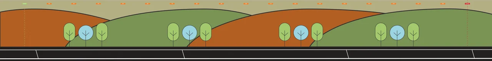
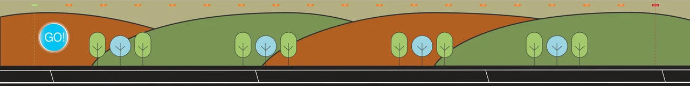
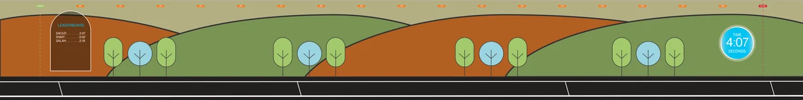

Alternative visual directions
The four-slide interface deck labels a runner game and two design directions.
Alternative directions for one game concept.
Explore the story
Compare different visual treatments without treating variations as separate games.
A short presentation sets out two interface directions. Wide-format screen artwork and related motion material develop the runner concept across several states.
The four-slide interface deck labels a runner game and two design directions.
The presentation treats the runner game as one design problem with two interface directions.
Explore the complete compositions and interface states. Select any image for a closer look.
04 / PROJECT IMAGES
Select a view to explore.
The panoramic runner track establishes a start, finish and distance markers.
The player-name prompt sits at the starting side of the panoramic runner track.
The launch cue appears at the start of the track. This is saved interface artwork, not an executed race.

A leaderboard appears at the start of the panoramic track with supplied sample names and times.

Structure, interaction and visual decisions that give the work its character.
RoleUI direction, illustration arrangement and motion preparation; confirm personal work versus supplied game assets.
AssetsProvided brand guidelines and source-game imagery require credit. Original game and character authorship are not established.
StatusOne interface study with variants; gallery export held because a precise native identity object was not established.